Part 27
25.I have been known, in the past, to overdramatize events; its possible that Im doing so again in this situation. If thats the case, I apologize for overhyping an event that might not be that big a deal. I fully understand that some scenarios are more intense for some than others, and this might be one of those times. The last thing I want to do is drum up unnecessary hype.
That being said, I just want to make my thoughts known on it. Games like this dont usually stick with me that hard. I played through Spec Ops: The Line without much more than a little annoyance. I regularly pick the jerk option in games and dont generally mind when bad things happen to good people. I used to speedrun Undertale genocide mode without much more than precursory guilt.
THIS is the scene thats stuck with me and the scene that will probably haunt me for a long time. Its not a long scene, but its potent.
If youre not ready to feel super bad about causing a good person unnecessary anguish bail now. This is my last warning.
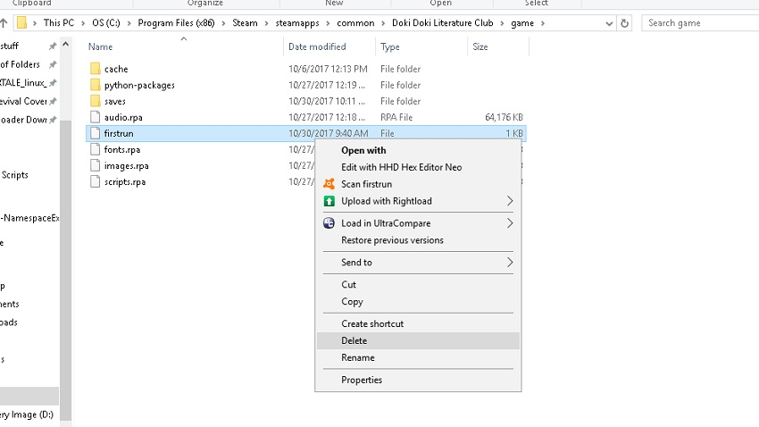
This particular ending only works with a fresh install of the game (I think), but heres a quick note. The game says that you need to reinstall it in order to replay no matter what, but you can also delete the file called firstrun in the game folder and it accomplishes the same thing. Useful if you dont feel like reinstalling half a gig multiple times because SOMEONE keeps deleting your game file saves when youre TRYING to LP A GAME MONIKA.
Hey, as long as were in the game folder, though
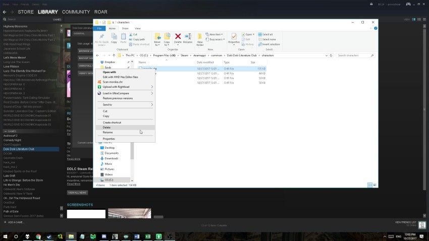
Lets redelete the Monika file. Were now going to be starting Doki Doki Literature Club without Monika included in any way.
Note that this one of the only situations where messing with the CHR files actually does anything (other than during the main ending, of course). It would be pretty neat if there were more changes that happened if you were to delete, say, Yuri but its unfortunately not that advanced. A little bit of wasted potential, but it probably would have required a lot more programming than Dan Salvato was prepared to include. Oh well.
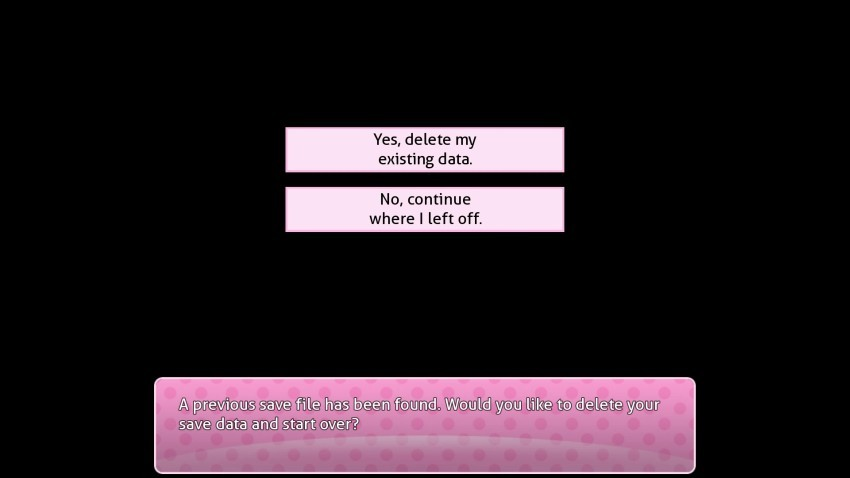
Youre going to need to delete your previous save data on this screen.
Peace out, happy ending. You never existed.
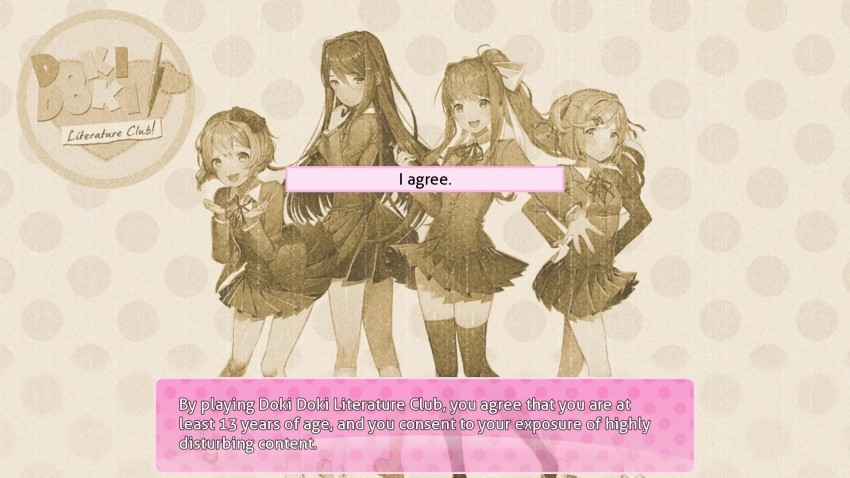
BGM: Doki Doki Literature Club!
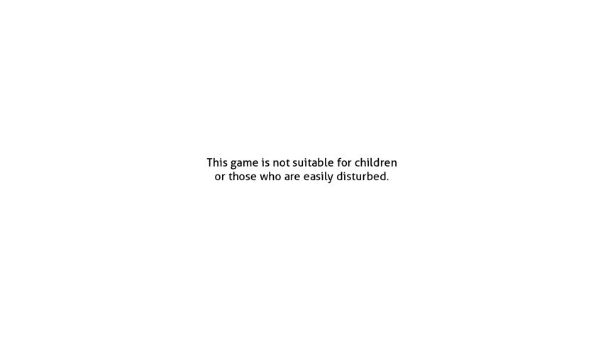
The game starts normally.
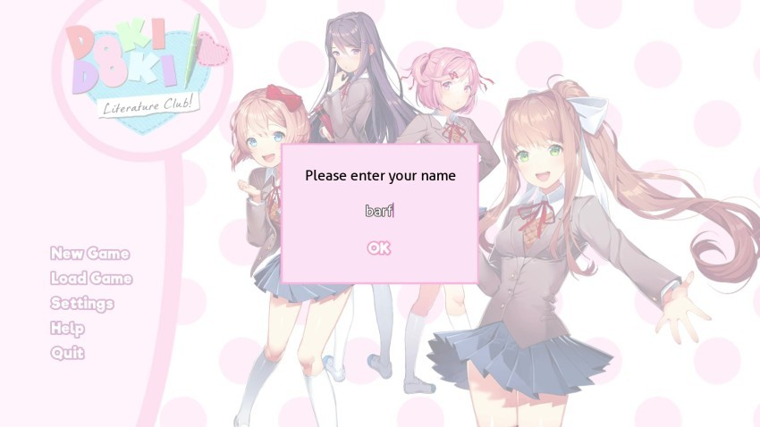
Youll need to put in a new name. For some reason, the intro screen doesnt recognize that Monikas gone a shame, considering that that particular opening graphic is already in the game files. Again, oh well.
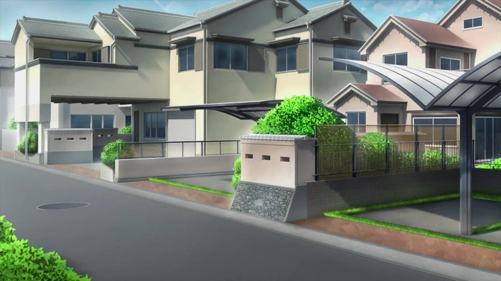
I didnt skip any screenshots. The game cold-opens on Sayori.
I highly suggest that you watch this scene via the following link. You dont really get the full effect unless youre hearing the jaunty tunes of Ohayou Sayori playing in the background plus, well, what comes afterwards.
http://www.polsy.org.uk/play/yt/?vu...BpQw&autoplay=1
BGM: Ohayou Sayori!
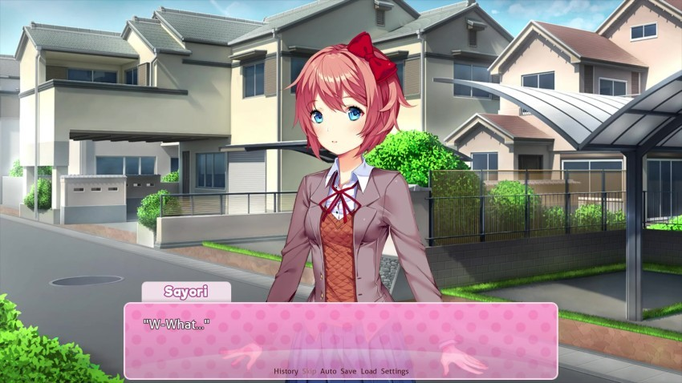

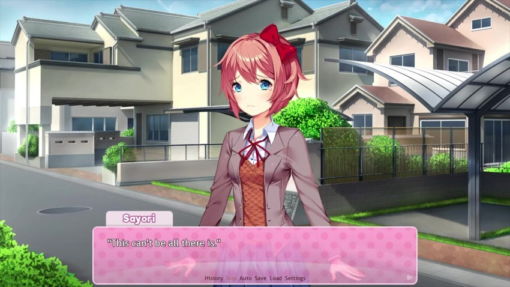
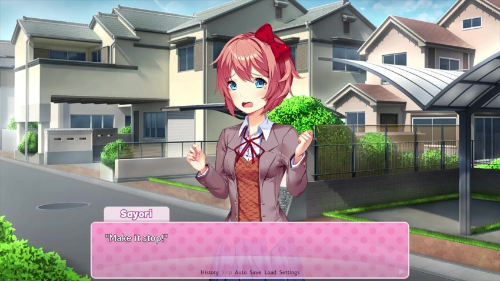

The game shuts down at this point automatically.
So you guys remember when Monika was deleted in the main ending, and Sayori took in all of the experiences and memories from her mind when she became president of the Literature Club?
That didnt happen this time.
Our friend Sayori, who was already extremely depressed and nearing the verge of taking her own life, was just given the gift of truth that she is a computer character in a video game a meaningless file of 1s and 0s with no greater purpose than to fall in love with the player character. Monika accepted this information with as much grace as she could manage given her programming.
Sayori, though
BGM: A record skipping effect (similar to this)


Sayori only sees one way out from here. This screen does not advance and there is nothing beyond this point only grey nothingness and Sayoris forsaken corpse. Restarting the game will give you this same result every time.
A lot of people blame themselves for what happened to Sayori in Act I when they really had no choice in the matter. Monikas influence, along with Sayoris own mental state/programming, drove Sayori to her unfortunate end. The PC had no control over it whatsoever.
This, however, is different.
WE caused this.
We gave Sayori the forbidden knowledge that she wasnt ready for, could never be ready for at this state in the game. We drove her to that unfortunate end needlessly, and theres nothing we can do at this point to change that fact. We can restart the game by deleting firstrun or reinstalling, of course, but this knowledge will forever be with us that in one timeline, at least Sayori died as a direct result of our actions.
Why have I shared this with you? Why have I brought you to this end? A part of it is thoroughness, of course. Team Salvato programmed this, after all, and documentation on this game should include it.
I think a far greater, pettier part of me wants others to experience the information that I know. Misery loves company, after all.
If, for some reason, you want to watch Sayori hang around for at least ten minutes, a small message appears on the screen.
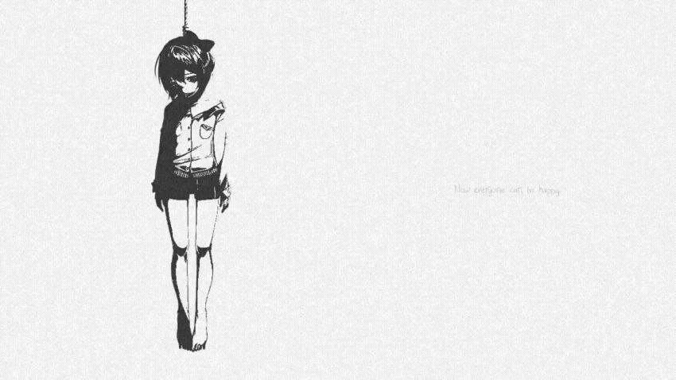
When Sayori shut down the game earlier, she also deleted the CHR files that remained: Natsuki, Yuri and herself. She had no intention of either of them experiencing the same fate. It was her last act of kindness in the world that, like what weve seen in this ending, has become a bleak and barren hell.
Im not sorry for bringing you here.
This is a path we all chose.
Now we all live with these consequences.
Thats all.
Thanks for watching.
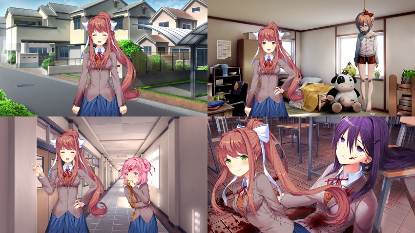